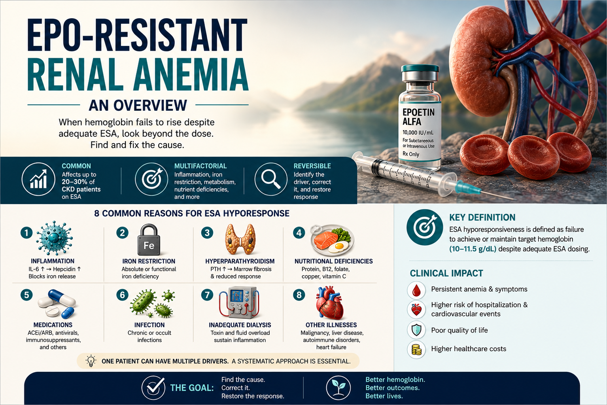
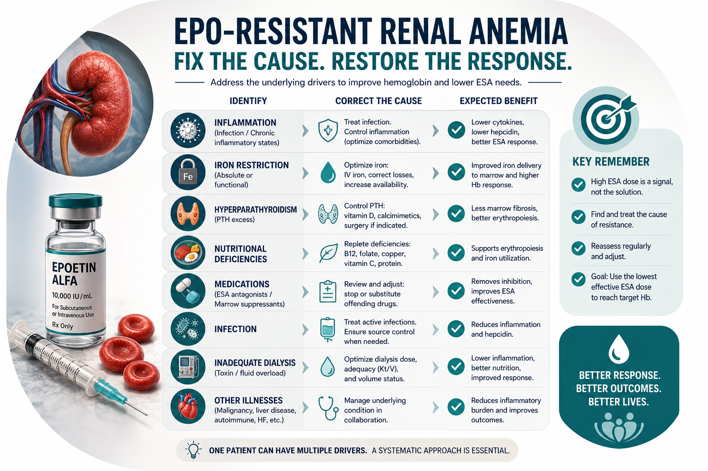
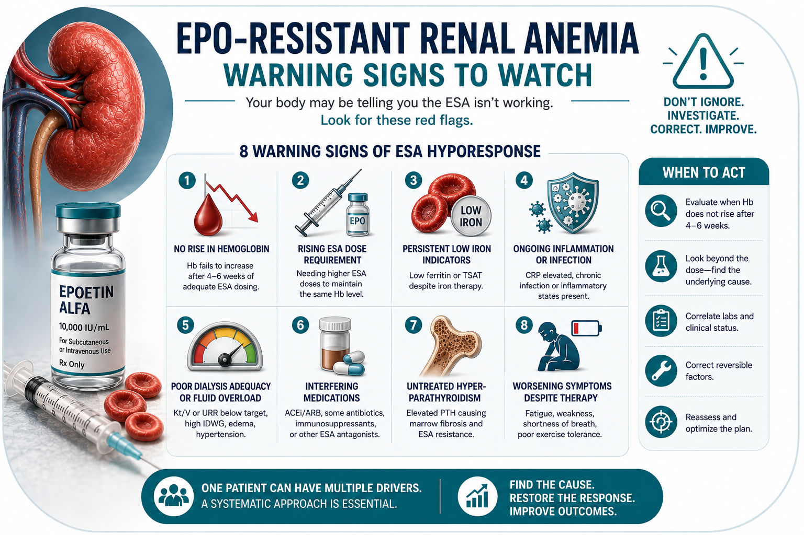
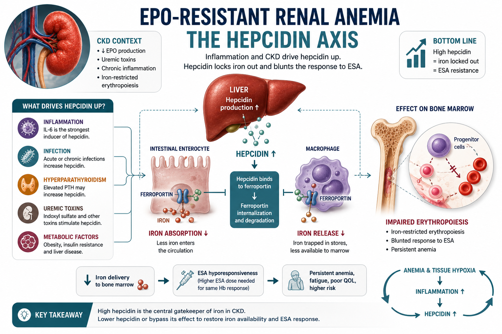
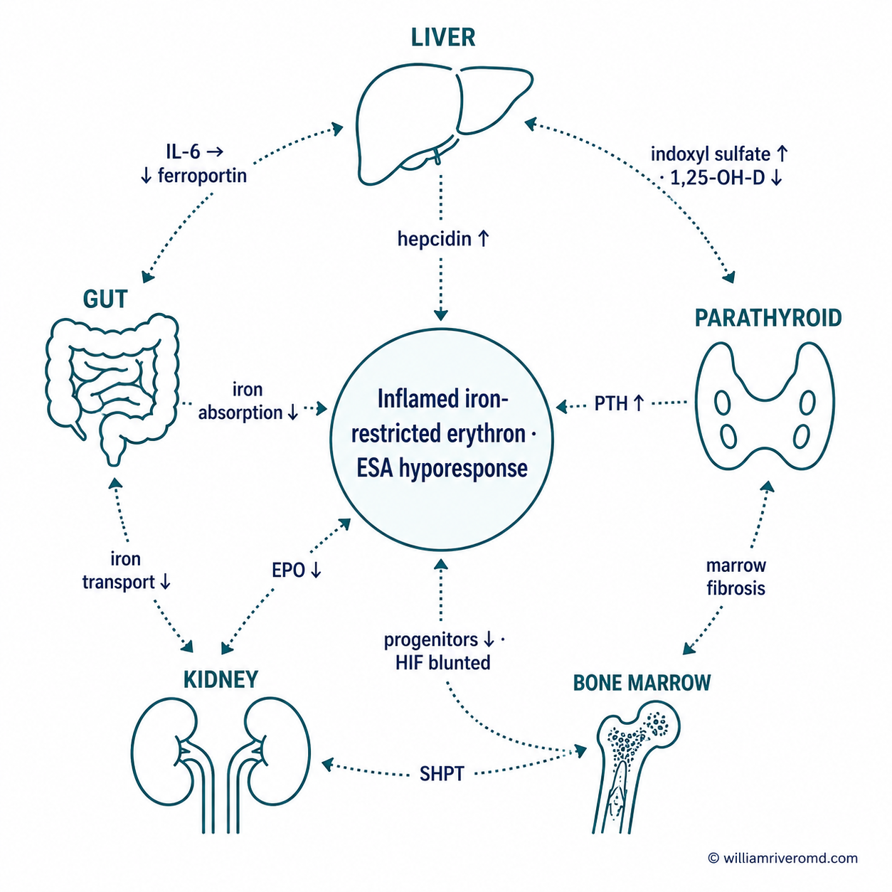
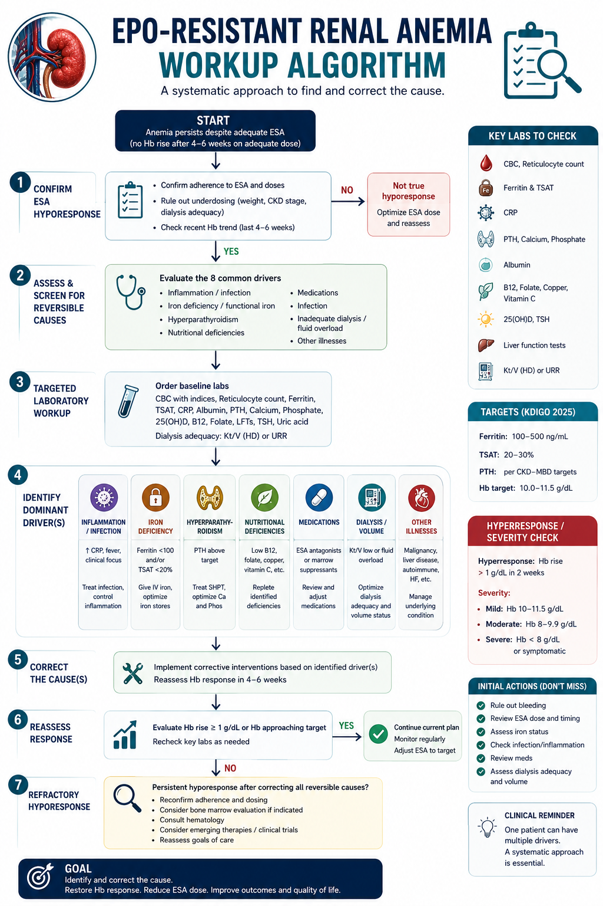

Understanding "EPO-Resistant" anemia of kidney diseasePag-unawa sa "EPO-Resistant" anemia sa sakit sa batoPagsabot sa "EPO-Resistant" anemia sa sakit sa kidneyPamag-intindi king "EPO-Resistant" anemia king sakit king batu

Healthy kidneys make a hormone called erythropoietin (EPO) that tells your bone marrow to build red blood cells. When kidneys are damaged, they make less EPO — so you can become anemic and feel tired, short of breath, cold, or weak. To help, your kidney doctor may prescribe an EPO-like injection (an ESA, or "erythropoiesis-stimulating agent"). For most patients, this works well.Ang malulusog na bato ay gumagawa ng hormon na tinatawag na erythropoietin (EPO) na nag-uutos sa utak ng buto na gumawa ng mga pulang selula ng dugo. Kapag may pinsala ang bato, mas kaunting EPO ang nagagawa — kaya maaari kang magka-anemia at maramdamang pagod, hingal, lamig, o manghina. Para tumulong, maaaring magreseta ang iyong doktor ng EPO-like na iniksyon (isang ESA, o "erythropoiesis-stimulating agent"). Sa karamihan, mahusay itong gumagana.Ang himsog nga kidney naghimo og hormon nga gitawag og erythropoietin (EPO) nga nagsugo sa utok sa bukog nga maghimo og mga pulang selula sa dugo. Kung adunay danyos ang kidney, gamay ra ang EPO nga mahimo — busa mahimo ka magka-anemia ug mobati og kapoy, kapulgi, katugnaw, o kaluya. Aron makatabang, mahimong magreseta ang imong doktor og EPO-like nga iniksyon (usa ka ESA, o "erythropoiesis-stimulating agent"). Sa kadaghanan, maayo kining molihok.Ing malulusog a batu ya gumagawa ning hormon a tinatawag a erythropoietin (EPO) a nag-uutos king utak ning butu a gumawa ning deng pulang selula ning daya. Nung atin pinsala ing batu, mas kaunting EPO ing nagagawa — kaya pwedeng magka-anemia ka at maramdamang pagod, hingal, lamig, o manghina. Para tumulong, pwedeng magreseta ing kekang doktor ning EPO-like a iniksyon (metung a ESA, o "erythropoiesis-stimulating agent"). King karamihan, mahusay itong gumagana.
But sometimes the marrow does not respond — even at higher doses. We call this "EPO resistance" or hyporesponsiveness. The important truth is this: it almost always means something else is getting in the way of making red cells — not that your body has stopped listening to EPO. Finding and fixing that "something else" is far safer and more effective than just pushing the dose higher.Pero minsan, hindi tumutugon ang utak ng buto — kahit tumaas na ang dose. Tinatawag itong "EPO resistance" o hyporesponsiveness. Ang mahalagang katotohanan: halos palaging may ibang bagay na humaharang sa paggawa ng mga pulang selula — hindi na hindi nakikinig ang katawan sa EPO. Mas ligtas at mas epektibong hanapin at ayusin ang "ibang bagay" na iyon kaysa basta itaas ang dose.Apan usahay, dili motubag ang utok sa bukog — bisan misaka na ang dose. Gitawag namo kining "EPO resistance" o hyporesponsiveness. Ang importanting kamatuoran: halos kanunay adunay laing butang nga nagpugong sa paghimo og pulang selula — dili nga wala na maminaw ang lawas sa EPO. Mas luwas ug mas epektibo ang pagpangita ug pag-ayo sa "laing butang" nga kana kaysa basta-basta nga pagsaka sa dose.Pero misan, ali tumutugon ing utak ning butu — kahit tumaas na ing dose. Tinatawag mi ining "EPO resistance" o hyporesponsiveness. Ing mahalagang katotohanan: halos palaging atin aliwa a bagay a humaharang king paggawa ning deng pulang selula — ali a ali na makikinig ing bangkî king EPO. Mas ligtas at mas epektibong hanapin at ayusin ing "aliwa a bagay" a yan kesa basta itaas ing dose.
The key ideaAng susing ideyaAng sentro nga ideyaIng susing ideya
EPO resistance is rarely a failure of the marrow to "hear" the signal. It is almost always a failure of substrate (iron the marrow can actually use) and a hostile inflammatory environment. Fix those, and the marrow usually starts working again — at a much safer EPO dose.Bihirang totoong tumigil sa pakikinig ang utak ng buto. Halos palaging kulang sa materyales (iron na talagang magagamit ng utak ng buto) at may matinding pamamaga sa katawan. Kapag inayos ang mga ito, kadalasang magsisimulang gumana ulit ang utak ng buto — sa mas ligtas na dose ng EPO.Panagsa ra nga tinuod nga mihunong sa pagpaminaw ang utok sa bukog. Halos kanunay kulang sa materyales (iron nga magamit gayud sa utok sa bukog) ug adunay grabe nga pamamaga sa lawas. Kung ayohon kini, kasagaran mosugod og molihok pag-usab ang utok sa bukog — sa mas luwas nga dose sa EPO.Bihirang totoong tumigil king pakikinig ing utak ning butu. Halos palaging kulang king materyales (iron a talagang magagamit ning utak ning butu) at atin matinding pamamaga king bangkî. Nung inayos ing deng ini, kadalasan magsisimulang gumana pasibayu ing utak ning butu — king mas ligtas a dose ning EPO.
The most common reasons EPO stops workingMga karaniwang dahilan kung bakit hindi na umuubra ang EPOMga kasagarang hinungdan nganong dili na molihok ang EPODeng karaniwang dahilan kung bakit ali na umuubra ing EPO
🩸 Low iron — or iron that is "locked away"Mababang iron — o iron na "nakakulong"Ubos nga iron — o iron nga "nakulong"Mababang iron — o iron a "makulong"
The number-one cause. Even when iron stores look normal on a blood test, inflammation can trap iron inside cells so the marrow cannot reach it. This is why IV iron — not just iron pills — is usually needed in dialysis.Pinakanumero unong sanhi. Kahit normal ang itsura ng iron sa blood test, ang pamamaga ay maaaring magkulong sa iron sa loob ng mga selula kaya hindi ito maabot ng utak ng buto. Kaya kailangan ng IV iron sa dialysis — hindi lang iron pills.Numero uno nga hinungdan. Bisan normal ang iron sa blood test, ang pamamaga makapatipig sa iron sulod sa mga selula busa dili kini maabot sa utok sa bukog. Mao nga IV iron ang gikinahanglan sa dialysis — dili lang iron pills.Pinakanumero unong sanhi. Kahit normal ing itsura ning iron king blood test, ing pamamaga ya pwedeng magkulong king iron king lub ning deng selula kaya ali ini maabot ning utak ning butu. Kaya kailangan ning IV iron king dialysis — ali la iron pills.
🔥 Inflammation or hidden infectionPamamaga o nakatagong impeksyonPamamaga o tinago nga impeksyonPamamaga o makatagong impeksyon
Infections you may not feel — a quiet dental abscess, a dialysis catheter, a foot ulcer, a failed graft — release proteins that trap iron and tell the marrow to slow down. Cleaning these up often restores EPO response.Mga impeksyong maaaring hindi mo maramdaman — tahimik na ngipin na abscess, dialysis catheter, sugat sa paa, palpak na graft — ay naglalabas ng mga protina na nagkukulong sa iron at nagpapabagal sa utak ng buto. Kapag nalinis ang mga ito, madalas na nakakabalik ang tugon sa EPO.Mga impeksyon nga mahimo dili nimo bation — hilom nga abscess sa ngipon, dialysis catheter, samad sa tiil, napakyas nga graft — nagpagawas og mga protina nga nagkulong sa iron ug nagsugo sa utok sa bukog nga maghinay. Kung mahinloan kini, kasagaran mobalik ang tubag sa EPO.Deng impeksyong pwedeng ali mu maramdaman — tahimik a ngipin a abscess, dialysis catheter, sugat king bitis, palpak a graft — ya naglalabas ning deng protina a nagkukulong king iron at nagpapabagal king utak ning butu. Nung nalinis ing deng ini, madalas a nakakabalik ing tugon king EPO.
🦴 Overactive parathyroid glandsSobrang aktibong parathyroid glandsSobrang aktibong parathyroid glandsSobrang aktibong parathyroid glands
In advanced kidney disease, the parathyroid glands can become overactive (high PTH on labs). Very high PTH replaces healthy marrow with scar tissue and blunts EPO response. Vitamin D, phosphate binders, calcimimetics, or surgery can help.Sa advanced na sakit sa bato, maaaring maging sobrang aktibo ang parathyroid glands (mataas ang PTH sa labs). Ang napakataas na PTH ay pumapalit sa malusog na utak ng buto ng peklat at nagpapabagal sa tugon sa EPO. Makakatulong ang vitamin D, phosphate binders, calcimimetics, o operasyon.Sa advanced nga sakit sa kidney, mahimong sobrang aktibo ang parathyroid glands (taas ang PTH sa labs). Ang taas kaayong PTH nagpuli sa himsog nga utok sa bukog og scar tissue ug nagpahinay sa tubag sa EPO. Makatabang ang vitamin D, phosphate binders, calcimimetics, o operasyon.King advanced a sakit king batu, pwedeng maging sobrang aktibo ing parathyroid glands (mataas ing PTH king labs). Ing napakataas a PTH ya pumapalit king malusog a utak ning butu ning peklat at nagpapabagal king tugon king EPO. Makakatulong ing vitamin D, phosphate binders, calcimimetics, o operasyon.
🍚 Poor nutrition or weight lossMahinang nutrisyon o pagbaba ng timbangMahinang nutrisyon o paghulog sa timbangMahinang nutrisyon o pagbaba ning timbang
Protein-energy wasting — losing muscle and protein — strongly predicts a poor EPO response. Adequate protein at meals (especially around dialysis), enough calories, and treating the appetite-killing parts of chronic kidney disease (CKD) are foundational.Ang protein-energy wasting — pagkawala ng muscle at protina — ay malakas na nag-aabiso ng mahinang tugon sa EPO. Mahalaga ang sapat na protina sa bawat kain (lalo na sa paligid ng dialysis), sapat na calories, at paggamot sa mga sanhi ng pagkawala ng gana.Ang protein-energy wasting — pagkawala sa kaunuran ug protina — kusgan nga nagpamatuod sa mahinang tubag sa EPO. Importante ang sapat nga protina matag pagkaon (labi na sa palibot sa dialysis), sapat nga calories, ug pagtambal sa mga hinungdan sa pagkawala sa gana.Ing protein-energy wasting — pagkawala ning muscle at protina — ya makapangang nag-aabiso ning mahinang tugon king EPO. Mahalaga ing sapat a protina king bawat kain (lalo na king paligid ning dialysis), sapat a calories, at paggamut king deng sanhi ning pagkawala ning gana.
💧 Not enough dialysisHindi sapat na dialysisDili sapat nga dialysisAli sapat a dialysis
If dialysis is under-prescribed or sessions get cut short, uremic toxins build up. Some of these toxins (like indoxyl sulfate) directly suppress red-cell production and shorten the lifespan of the cells that do get made.Kung kulang ang reseta ng dialysis o pinaiikli ang mga session, naipon ang mga uremic toxin. Ang ilan sa mga ito (tulad ng indoxyl sulfate) ay direktang pumipigil sa paggawa ng pulang selula at pinaikli ang buhay ng mga selulang nagagawa.Kung kulang ang reseta sa dialysis o gipamubo ang mga session, magpundok ang mga uremic toxin. Ang uban niini (sama sa indoxyl sulfate) direkta nga nagpugong sa paghimo og pulang selula ug nagpamubo sa kinabuhi sa mga selula nga nahimo.Nung kulang ing reseta ning dialysis o pinaiikli ing deng session, naipon ing deng uremic toxin. Ing aliwa king deng ini (kapariho ning indoxyl sulfate) ya direktang pumipigil king paggawa ning pulang selula at pinaikli ing biye ning deng selulang nagagawa.
🌿 Low vitamin D, B12, or folateMababang vitamin D, B12, o folateUbos nga vitamin D, B12, o folateMababang vitamin D, B12, o folate
These vitamins are quiet partners for the marrow. Vitamin D also dampens inflammation. Replacing them is cheap, safe, and can meaningfully improve the response to EPO when levels are low.Ang mga bitaminang ito ay tahimik na katuwang ng utak ng buto. Ang vitamin D ay nakakapagpababa rin ng pamamaga. Ang pagpapalit sa mga ito ay mura, ligtas, at maaaring makatulong nang malaki sa tugon sa EPO kapag mababa ang antas.Kining mga bitamina hilom nga kauban sa utok sa bukog. Ang vitamin D nagpaubos usab sa pamamaga. Ang pag-puli niini barato, luwas, ug mahimong makatabang og dako sa tubag sa EPO kung ubos ang lebel.Ing deng bitaminang ini ya tahimik a katuwang ning utak ning butu. Ing vitamin D ya nakakapagpababa mu ning pamamaga. Ing pagpapalit king deng ini ya mura, ligtas, at pwedeng makatulong nang malaki king tugon king EPO nung mababa ing antas.
🩸 Hidden blood lossNakatagong pagkawala ng dugoTinago nga pagkawala sa dugoMakatagong pagkawala ning daya
Slow bleeding from the gut, frequent blood draws, blood left in the dialysis circuit, or heavy periods all drain iron. Stool tests, upper-GI evaluation, or gynecologic review may be needed.Mabagal na pagdurugo sa bituka, madalas na blood draws, dugo na naiwan sa dialysis circuit, o malakas na regla ay nag-aalis ng iron. Maaaring kailanganin ang stool tests, upper-GI evaluation, o gynecologic review.Hinay nga pagdugo sa tinai, kanunay nga blood draws, dugo nga nahabilin sa dialysis circuit, o kusog nga regla nagpaubos sa iron. Mahimong gikinahanglan ang stool tests, upper-GI evaluation, o gynecologic review.Mabagal a pagdurugo king bituka, madalas a blood draws, daya a naiwan king dialysis circuit, o makalat a regla ya nag-aalis ning iron. Pwedeng kailanganin ing stool tests, upper-GI evaluation, o gynecologic review.
⛔ A rare reaction to the EPO itselfMga bihirang reaksyon sa EPO mismoTalagsa nga reaksyon sa EPO mismoBihirang reaksyon king EPO mismo
Very rarely, the body makes antibodies that block EPO completely. This shows up as a sudden fall in hemoglobin with no new red cells being made — and is a medical urgency. Your doctor screens for this when hemoglobin crashes on therapy.Napakabihira, gumagawa ng antibodies ang katawan na ganap na humaharang sa EPO. Ipinapakita ito ng biglaang pagbaba ng hemoglobin na walang bagong pulang selula — isang medikal na agarang sitwasyon. Sinusuri ng doktor mo ito kapag biglaang bumagsak ang hemoglobin sa therapy.Talagsa kaayo, naghimo og antibodies ang lawas nga hingpit nga nagpugong sa EPO. Magpakita kini sa kalit nga paghulog sa hemoglobin nga walay bag-ong pulang selula — usa ka medikal nga emergency. Susihon kini sa imong doktor kung kalit nga mihulog ang hemoglobin sa therapy.Napakabihira, gumagawa ning antibodies ing bangkî a ganap a humaharang king EPO. Ipinapakita ini ning biglaang pagbaba ning hemoglobin a alang bagong pulang selula — metung a medikal a agarang sitwasyon. Sinusuri ning doktor mu ini nung biglaang bumagsak ing hemoglobin king therapy.
What we do — fix the cause, don't just push the doseAng ginagawa namin — ayusin ang sanhi, hindi basta itaas ang doseAng among ginabuhat — ayohon ang hinungdan, dili basta isaka ang doseIng gagawan mi — ayusin ing sanhi, ali basta itaas ing dose

A six-step ladder shows what your kidney team does — in order — when EPO is not working: find the cause, replace iron (often IV), hunt hidden infection, balance PTH and minerals, optimize dialysis and nutrition, and consider a HIF-PHI medicine. Beside it sits a red "DON'T just push the EPO dose" panel — pushing higher doses raises the risk of stroke and heart problems without making you feel better.
Two decades of large trials have taught us one critical lesson: forcing the hemoglobin all the way up to normal with very high EPO doses causes more strokes, more heart problems, and more deaths — without making people feel better. That is why your kidney doctor aims for a steady, safer hemoglobin of about 10–11.5 g/dL and looks for the real cause when the medicine stops working — instead of stacking the dose higher.Dalawang dekada ng malalaking pag-aaral ang nagturo ng isang mahalagang aral: ang pilitin ang hemoglobin pataas sa normal gamit ang napakataas na dose ng EPO ay nagdudulot ng mas maraming stroke, problema sa puso, at kamatayan — nang hindi gumagaling ang pakiramdam. Kaya nilalayon ng iyong doktor ang matatag, mas ligtas na hemoglobin na mga 10–11.5 g/dL at hinahanap ang totoong sanhi kapag tumitigil ang gamot — sa halip na itaas pa ang dose.Duha ka dekada sa dagkong pagtuon nagtudlo og usa ka importante nga leksyon: ang pagpugos sa hemoglobin paingon sa normal gamit ang taas kaayo nga dose sa EPO nagdala og mas daghang stroke, problema sa kasingkasing, ug kamatayon — nga walay paggawas sa pamati. Mao nga gipangita sa imong doktor ang malig-on, mas luwas nga hemoglobin nga mga 10–11.5 g/dL ug gipangita ang tinuod nga hinungdan kung mihunong ang tambal — kaysa pagsaka pa sa dose.Adwang dekada ning malalaking pag-aaral ing nagturo ning metung a mahalagang aral: ing pilitin ing hemoglobin pataas king normal gamit ing napakataas a dose ning EPO ya nagdudulot ning mas dacal a stroke, problema king pusu, at kamatayan — nang ali gumagaling ing pakiramdam. Kaya nilalayon ning kekang doktor ing matatag, mas ligtas a hemoglobin a mga 10–11.5 g/dL at hinahanap ing totoong sanhi nung tumitigil ing gamut — king halip na itaas pa ing dose.
In practice, the plan looks like this:Sa praktika, ganito ang plano:Sa praktika, mao kini ang plano:King praktika, ganini ing plano:
- Check and replace iron — usually through your vein (IV iron) in dialysis.Suriin at palitan ang iron — kadalasan sa pamamagitan ng ugat (IV iron) sa dialysis.Susihon ug pulihan ang iron — kasagaran pinaagi sa ugat (IV iron) sa dialysis.Suriin at palitan ing iron — kadalasan king pamamagitan ning ugat (IV iron) king dialysis.
- Hunt for and treat any infection or inflammation — including dental, foot, or access-site sources.Hanapin at gamutin ang anumang impeksyon o pamamaga — kabilang ang ngipin, paa, o pinagmumulan sa access site.Pangitaa ug tambala ang bisan unsang impeksyon o pamamaga — apil ang ngipon, tiil, o gigikanan sa access site.Hanapin at gamutin ing anumang impeksyon o pamamaga — kabilang ing ngipin, bitis, o pinagmumulan king access site.
- Balance your PTH and minerals — vitamin D, phosphate binders, calcimimetics, or sometimes a parathyroid operation.Ibalanse ang PTH at mga mineral — vitamin D, phosphate binders, calcimimetics, o minsan parathyroid operation.Balansiha ang PTH ug mga mineral — vitamin D, phosphate binders, calcimimetics, o usahay parathyroid operation.Ibalanse ing PTH at deng mineral — vitamin D, phosphate binders, calcimimetics, o misan parathyroid operation.
- Optimize dialysis and nutrition — full sessions, adequate dose, enough protein and calories.I-optimize ang dialysis at nutrisyon — buong session, sapat na dose, sapat na protina at calories.I-optimize ang dialysis ug nutrisyon — kompleto nga session, sapat nga dose, sapat nga protina ug calories.I-optimize ing dialysis at nutrisyon — buong session, sapat a dose, sapat a protina at calories.
- Consider a HIF-PHI — a newer oral medicine that helps your body use iron and make EPO more naturally, especially when inflammation is the main problem.Isaalang-alang ang HIF-PHI — isang mas bagong oral na gamot na tumutulong sa katawan na gamitin ang iron at gumawa ng EPO nang mas natural, lalo na kapag ang pamamaga ang pangunahing problema.Hunahunaa ang HIF-PHI — usa ka bag-ong oral nga tambal nga nagtabang sa lawas nga mogamit sa iron ug maghimo og EPO sa mas natural nga paagi, labi na kung ang pamamaga mao ang nag-unang problema.Isaalang-alang ing HIF-PHI — metung a mas bagong oral a gamut a tumutulong king bangkî a gamitin ing iron at gumawa ning EPO nang mas natural, lalo na nung ing pamamaga ing pangunahing problema.
- Add proven helpers — vitamin D when low, L-carnitine in selected dialysis patients, and treatment of any specific cofactor deficiency.Magdagdag ng napatunayang katulong — vitamin D kapag mababa, L-carnitine sa piling pasyente sa dialysis, at paggamot sa anumang kakulangan sa cofactor.Idugang ang napamatud-an nga katabang — vitamin D kung ubos, L-carnitine sa pinili nga pasyente sa dialysis, ug pagtambal sa bisan unsang cofactor nga kakulang.Magdagdag ning napatunayang katulong — vitamin D nung mababa, L-carnitine king piling pasyente king dialysis, at paggamut king anumang kakulangan king cofactor.
What you can do to help your treatment workPaano mo matutulungan ang iyong gamutan na umubraUnsaon nimo pagtabang sa imong pagtambal nga molihokPaano mu matutulungan ing kekang gamutan na umubra
Five practical thingsLimang praktikal na bagayLima ka praktikal nga butangLimang praktikal a bagay
1. Take iron and other supplements exactly as prescribed, and keep your lab appointments — your iron and inflammation are tracked by blood tests.
2. Tell us about any signs of infection (fever, redness or pus at your access site, dental pain, foot wounds), bleeding (black or red stools, heavy periods, nosebleeds), or new fatigue.
3. Complete your full dialysis sessions — even when you feel tired or have somewhere to be — and follow your nutrition plan with enough protein.
4. Ask before starting any new supplement, herbal product, or "energy" drink — many of them quietly interfere with iron, EPO, or your kidneys.
5. Bring this guide and your questions to your next visit. Our goal is a steady, safe hemoglobin — not a "perfect" lab number. Feeling better and staying safe matter more than the value alone.1. Inumin ang iron at iba pang supplements ayon sa reseta, at huwag laktawan ang mga lab appointments — sinusubaybayan ang iyong iron at pamamaga sa pamamagitan ng blood tests.
2. Sabihin sa amin ang anumang tanda ng impeksyon (lagnat, pamumula o nana sa access site, sakit ng ngipin, sugat sa paa), pagdurugo (itim o pulang dumi, malakas na regla, balinguyngoy), o bagong pagod.
3. Tapusin ang buong dialysis session — kahit pagod o may pupuntahan — at sundin ang nutrisyon na may sapat na protina.
4. Magtanong bago magsimula ng anumang bagong supplement, herbal product, o "energy" drink — marami sa mga ito ang tahimik na humahadlang sa iron, EPO, o sa iyong bato.
5. Dalhin ang gabay na ito at ang iyong mga tanong sa susunod na bisita. Ang aming layunin ay matatag at ligtas na hemoglobin — hindi "perpektong" numero sa lab. Ang pakiramdam at kaligtasan ay mas mahalaga kaysa sa numero lamang.1. Inuma ang iron ug uban pang supplements sumala sa reseta, ug ayaw laktawi ang mga lab appointments — gisubay ang imong iron ug pamamaga pinaagi sa blood tests.
2. Isulti kanamo ang bisan unsang timailhan sa impeksyon (hilanat, pagpula o nana sa access site, sakit sa ngipon, samad sa tiil), pagdugo (itom o pulang lubay, kusog nga regla, pagdugo sa ilong), o bag-ong kapoy.
3. Humanon ang tibuok dialysis session — bisan kapoy ka o adunay laing buhaton — ug sundon ang nutrisyon nga adunay sapat nga protina.
4. Pangutana sa wala pa magsugod og bisan unsang bag-ong supplement, herbal product, o "energy" drink — daghan niini ang hilom nga nagpugong sa iron, EPO, o sa imong kidney.
5. Dad-a kining giya ug ang imong mga pangutana sa sunod nga bisita. Ang among tumong mao ang malig-on ug luwas nga hemoglobin — dili "perpektong" numero sa lab. Ang pamati ug kaluwasan mas importante kaysa sa numero lamang.1. Inumin ing iron at aliwa pang supplements ayon king reseta, at e laktawan ing deng lab appointments — sinusubaybayan ing kekang iron at pamamaga king pamamagitan ning blood tests.
2. Sabihin kekami ing anumang tanda ning impeksyon (lagnat, pamumula o nana king access site, sakit ning ngipin, sugat king bitis), pagdurugo (itim o pulang dumi, makalat a regla, balinguyngoy), o bagong pagod.
3. Tapusin ing buong dialysis session — kahit pagod o atin pupuntahan — at sundin ing nutrisyon a atin sapat a protina.
4. Magtanong bayu magsimula ning anumang bagong supplement, herbal product, o "energy" drink — dacal king deng ini ya tahimik a humahadlang king iron, EPO, o king kekang batu.
5. Dalhin ing gabay a ini at ing kekang deng tanong king susunod a bisita. Ing kekami layunin ya matatag at ligtas a hemoglobin — ali "perpektong" numero king lab. Ing pakiramdam at kaligtasan ya mas mahalaga kesa king numero lamang.
Warning signs — when to call your kidney teamMga babala — kailan tatawag sa kidney teamMga pasidaan — kanus-a motawag sa kidney teamDeng babala — kailan tatawag king kidney team

A fridge-friendly safety card listing the six warning signs to call about right away — sudden energy drop or paleness, bleeding from the stomach or bowel, very heavy menstrual bleeding, fever or pus at the dialysis access, severe dental pain or a foot wound, and chest pain or stroke signs. Call your dialysis unit or go to the ER — don't wait for your next clinic visit.
Call promptly if any of these appearTumawag agad kung lumitaw ang alinman sa mga itoTawag dayon kung mogawas ang bisan unsa niiniTumawag agad nung lumitaw ing alinman king deng ini
A sudden, severe drop in energy or paleness after weeks of stable injections; black, tarry, or bloody stools, vomiting blood, or sudden very heavy menstrual bleeding; fever, chills, redness, or pus at a dialysis catheter or fistula; severe dental pain, foot wound, or new abscess; chest pain, sudden one-sided weakness, slurred speech, or vision loss (possible stroke). With any of these, contact your dialysis unit or go to the emergency room — do not wait for your next clinic visit.Biglaang at malubhang pagbaba ng lakas o pamumutla pagkatapos ng linggo ng matatag na iniksyon; itim, parang tar, o madugong dumi, pagsusuka ng dugo, o biglaang napakalakas na regla; lagnat, panginginig, pamumula, o nana sa dialysis catheter o fistula; matinding sakit ng ngipin, sugat sa paa, o bagong abscess; sakit ng dibdib, biglaang panghihina sa isang gilid, hindi malinaw na pagsasalita, o pagkawala ng paningin (posibleng stroke). Sa alinman sa mga ito, tumawag sa dialysis unit o pumunta sa emergency room — huwag maghintay sa susunod na bisita.Kalit ug grabe nga paghulog sa kusog o pagpula human sa mga semana sa malig-on nga iniksyon; itom, parang tar, o dugoon nga lubay, pagsuka og dugo, o kalit kaayong kusog nga regla; hilanat, kurog, pagpula, o nana sa dialysis catheter o fistula; grabe nga sakit sa ngipon, samad sa tiil, o bag-ong abscess; sakit sa dughan, kalit nga kahuyang sa usa ka kilid, dili klaro nga pagsulti, o pagkawala sa panan-aw (posible nga stroke). Sa bisan unsa niini, tawag sa dialysis unit o adto sa emergency room — ayaw paghulat sa sunod nga bisita.Biglaang at malubhang pagbaba ning lakas o pamumutla kaybat ning linggo ning matatag a iniksyon; itim, parang tar, o madugong dumi, pagsusuka ning daya, o biglaang napakalakas a regla; lagnat, panginginig, pamumula, o nana king dialysis catheter o fistula; matinding sakit ning ngipin, sugat king bitis, o bagong abscess; sakit ning dibdib, biglaang panghihina king metung a gilid, ali malinaw a pagsasalita, o pagkawala ning paningin (posibleng stroke). King alinman king deng ini, tumawag king dialysis unit o pumunta king emergency room — e maghintay king susunod a bisita.
This guide is general patient education and is not a substitute for personal medical advice. Your treatment plan is tailored to you — please ask Dr. Rivero about your specific situation.Ang gabay na ito ay pangkalahatang edukasyon at hindi kapalit ng personal na payo sa medikal. Ang iyong plano ng paggamot ay nakatutok sa iyo — itanong kay Dr. Rivero ang iyong partikular na sitwasyon.Kining giya kay kinatibuk-ang edukasyon ug dili kapuli sa personal nga tambag sa medisina. Ang imong plano sa pagtambal naka-angkla kanimo — pangutana kang Dr. Rivero bahin sa imong partikular nga sitwasyon.Ing gabay a ini ya pangkalahatang edukasyon at ali kapalit ning personal a payu king medikal. Ing kekang plano ning paggamut ya nakatutok keka — itanong kang Dr. Rivero ing kekang partikular a sitwasyon.
What "ESA hyporesponsiveness" actually means
There is no single accepted definition of ESA hyporesponsiveness — and the incidence reported varies several-fold by the definition applied. In a single real-world cohort of 85,259 dialysis patients, the same population yielded incidence figures of 5.2% (NICE), 15.4% (KDIGO), 40.7% (ERI), and 47.9% by a clinical-practicality algorithm. Tellingly, hyporesponsive patients received higher ESA doses yet reached similar hemoglobin — the signature of dose escalation without substrate correction (Atzinger 2024, PMID 39581908).
KDIGO operational definition
- Initial hyporesponsiveness — no increase in Hb from baseline after the first month of appropriate weight-based ESA dosing.
- Acquired (subsequent) hyporesponsiveness — after a previously stable dose, requiring two increases in ESA dose up to 50% beyond the dose at which the patient had been stable to maintain a stable Hb.
- Dose-ceiling principle — avoid repeated escalation beyond roughly double the initial weight-based dose. The reflex to keep climbing is precisely the behavior the guideline warns against (Drüeke & Parfrey 2012, PMID 22854645; KDIGO 2026, PMID 41485807).
The Erythropoietin Resistance Index (ERI)
ERI is the most widely used quantitative metric:
ERI = weekly ESA dose (U) ÷ body weight (kg) ÷ Hb (g/dL)
Higher ERI = more drug per kilogram of patient buying less hemoglobin. Reported thresholds are heterogeneous, and the cutoff chosen materially changes who is labeled "resistant":
| Metric / threshold | Definition used | Source |
|---|---|---|
| ERI ≥ 2.0 U/kg/wk per g/L | Hyporesponse (USRDS Medicare cohort) | Cizman 2020, PMID 33089137 |
| ERI ≥ 1.5–2.0 U/kg/wk per g/L | Prespecified HypoR1–3 definitions | McCausland 2025, PMID 40333020 |
| ESA dose > 300 IU/kg/wk | Frank ESA resistance | Saudan 2006, PMID 16523432 |
| EPO > 150 U/kg/wk (PD) | EPO hyporesponse in peritoneal dialysis | Makruasi 2016, PMID 29901907 |
Practical reading
Use ERI longitudinally on the same patient rather than chasing an absolute cutoff. A rising ERI at stable Hb is an early warning to launch the workup below — before the dose climbs into the harm zone.
Hyporesponsiveness is not a benign laboratory curiosity
It is a potent, independent marker of adverse outcomes — and the high ESA doses used to chase it are themselves a hazard.
- Prevalence — definition-dependent, 5–48% in one large cohort; ~12–20% of maintenance-dialysis patients met prespecified hyporesponse definitions in ASCEND-D (Atzinger 2024; McCausland 2025).
- Mortality — in the USRDS Medicare cohort, hyporesponders received ~3.8-fold higher ESA doses, had iron deficiency in 26.5% vs 10.9%, and had 1-year mortality 25.3% vs 22.6% with more cardiovascular hospitalization (Cizman 2020, PMID 33089137).
- Independent risk — log-transformed pre-dialysis ERI independently predicted all-cause death (HR 2.25, 95% CI 1.25–4.06) in incident hemodialysis (Hayashi 2019, PMID 30943479).
- MACE — in ASCEND-D, all three hyporesponse definitions independently predicted adjudicated MACE (adjusted HR 1.32–1.36) with no effect modification by treatment arm. "Baseline ESA hyporesponsiveness is a potent predictor of MACE" (McCausland 2025).
- Renal progression — in non-dialysis CKD, hyporesponsiveness tracks with faster progression to kidney failure and cardiovascular events (Icardi 2013, PMID 23468534; Kato/BRIGHTEN 2017, PMID 28660446).
A mechanism-first map: substrate & milieu, not the signal
Anemia of CKD has two engines — relative EPO deficiency (the failing kidney under-produces erythropoietin) and iron-restricted erythropoiesis under hepcidin control. Resistance to exogenous ESA is overwhelmingly a problem of the second engine plus a suppressive milieu, not of EPO signaling per se (Babitt & Lin 2012, PMID 22935483; Weir 2021, PMID 34280923).
The hepcidin–ferroportin axis — the central lesion

The IL-6 → hepcidin → ferroportin axis is the central lesion of ESA hyporesponsiveness. Inflammation drives hepatic hepcidin; hepcidin internalizes ferroportin on macrophages and enterocytes; iron is trapped intracellularly; the marrow is iron-starved despite normal-to-high ferritin. Intervention targets inflammation, proactive IV iron, HIF-PHIs (lower hepcidin, raise transferrin/TIBC), and emerging anti-IL-6 (ziltivekimab).
- FPN
- ferroportin
- HAMP
- hepcidin antimicrobial peptide gene
- HIF-PHI
- hypoxia-inducible factor prolyl hydroxylase inhibitor
- TIBC
- total iron-binding capacity
Pro-inflammatory cytokines — IL-6 chief among them — drive hepatic hepcidin synthesis. Hepcidin binds and degrades ferroportin, the sole cellular iron-export channel, trapping iron inside enterocytes and macrophages. The result is functional (iron-restricted) erythropoiesis: ferritin is normal or high, yet iron cannot reach the marrow. Inflammation simultaneously suppresses erythroid progenitor proliferation and blunts the hypoxia response — a triple hit on the erythron (Weir 2021; Icardi 2013).
Drivers, mechanisms, and the evidence behind each
| Driver | Mechanism | Key evidence |
|---|---|---|
| Iron deficiency (absolute & functional) | Most common cause. Absolute depletion of stores or hepcidin-mediated sequestration despite adequate stores — limits substrate for hemoglobinization. | Tanaka 2015, PMID 26381391 |
| Inflammation (IL-6, CRP) | Drives hepcidin; suppresses progenitors; impairs hypoxia sensing. The dominant driver of true resistance. | Weir 2021; Babitt 2012 |
| CKD-MBD (chronic kidney disease–mineral and bone disorder) / secondary hyperparathyroidism | PTH as uremic toxin; marrow fibrosis (osteitis fibrosa); FGF23 (fibroblast growth factor 23) implicated. PTH >800 pg/mL over-represented in hyporesponders. | Tanaka 2018, PMID 29767854; Cizman 2020 |
| Uremic toxins (indoxyl sulfate) | Suppresses EPO transcription via the HIF pathway, disrupts iron metabolism, shortens RBC (red blood cell) survival, amplifies oxidative stress — a self-reinforcing cycle. | Rattanasompattikul 2025, PMID 41355384 |
| Malnutrition / PEW (protein-energy wasting) | Protein-energy wasting independently predicts poor EPO response; only non-PEW patients achieved Hb gains. Low albumin tracks the highest ERI tertile. | González-Ortiz 2019, PMID 31412807 |
| Vitamin deficiency (D, B12, folate, C) | Vitamin D deficiency promotes ESA resistance via inflammation; repletion lowered ERI, CRP, ferritin, iPTH. B12/folate needed for erythropoiesis; vitamin C aids iron mobilization. | Icardi 2013; Nand 2017, PMID 28457030 |
| Blood loss / shortened RBC survival | Dialysis-circuit and GI losses, platelet dysfunction, RBC fragmentation, uremic hemolysis — ongoing iron drain and lower Hb yield. | Gembillo 2025, PMID 41024950 |
| Anti-EPO antibody PRCA | Rare but serious — neutralizing antibodies cause pure red cell aplasia. Sudden Hb fall with reticulocytopenia on ESA. Stop ESA immediately. | Hashimoto 2016, PMID 27338269; Wu 2020, PMID 32856389 |
| Carnitine deficiency | Dialysis-related depletion; L-carnitine reduced ERI (MD −2.72) in meta-analysis and cut ERI 25% vs 3% (placebo) in a dedicated RCT (randomized controlled trial) of ESA-hyporesponsive HD (hemodialysis) patients. | Zhu 2021, PMID 33713287; Reuter 2026, J Ren Nutr |
| Other | Malignancy, occult infection, hemoglobinopathy/hemolysis, recent COVID-19 (months-long hepcidin-driven resistance), androgen deficiency. | Gembillo 2025; Dasgupta 2025, PMID 41136869 |
On ACE inhibitors / ARBs
Frequently cited as a cause, but the largest cross-sectional study (515 HD patients) found no association between ACEi (angiotensin-converting enzyme inhibitor) or ARB (angiotensin receptor blocker) use and ESA resistance. Do not reflexively stop renin-angiotensin blockade — the cardiorenal benefit almost always outweighs a theoretical erythropoietic cost (Saudan 2006, PMID 16523432).

A simple five-organ sigil summarizes the multi-organ inflammatory iron-restricted phenotype that drives ESA hyporesponse — not a single-axis EPO failure. Kidney supplies less EPO and more indoxyl sulfate; liver drives hepcidin under IL-6; gut absorption and macrophage iron egress collapse; the marrow erythron is iron-starved and progenitor-suppressed; parathyroid contributes marrow fibrosis. Therapy must address the milieu, not just the signal.
- SHPT
- secondary hyperparathyroidism
- HIF
- hypoxia-inducible factor
A cause-directed algorithm — find the lesion before climbing the dose
When ERI rises or Hb stalls despite adequate weight-based ESA, work the problem in this sequence. The goal is to find the correctable lesion before the dose is escalated.

Cause-directed workup before ESA escalation. The PRCA branch breaks off to the right (sudden Hb fall + reticulocytopenia on ESA → stop ESA → anti-EPO antibody assay). The bottom escalation node summarizes the safer endpoint when workup is unrevealing — cap ESA at ~2× weight-based, consider HIF-PHI, tolerate Hb 10–11.5 g/dL.
- ERI
- erythropoietin resistance index
- SHPT
- secondary hyperparathyroidism
- PRCA
- pure red cell aplasia
Confirm & quantify
Apply a definition (KDIGO dose-escalation criteria and/or ERI). Verify adherence, ESA storage, and administration technique.
Iron status first
Ferritin and TSAT (transferrin saturation). KDIGO thresholds: a trial of iron is reasonable when TSAT ≤ 30% and ferritin ≤ 500 ng/mL. Distinguish absolute from functional deficiency (Tanaka 2015).
Inflammation / infection
CRP/hsCRP (± IL-6). Hunt occult infection — vascular access, retained catheters, failed grafts, dental and foot sources (Icardi 2013).
Nutrition
Albumin, Malnutrition-Inflammation Score; address protein-energy wasting (González-Ortiz 2019).
CKD-MBD
Intact PTH — look for severe secondary hyperparathyroidism (especially >800 pg/mL) and treat (Tanaka 2018).
Dialysis adequacy
Kt/V; inadequate clearance raises indoxyl sulfate and suppresses erythropoiesis (Rattanasompattikul 2025).
Vitamins / cofactors
B12, folate, 25-OH vitamin D; consider vitamin C and L-carnitine in selected patients.
Blood loss / hemolysis
Reticulocyte count, LDH, haptoglobin, peripheral smear; evaluate GI and circuit losses.
Red flag — suspect PRCA
Sudden severe Hb fall with reticulocytopenia on ESA → stop ESA, check anti-EPO antibodies and marrow; treat with immunosuppression ± HIF-PHI (Hashimoto 2016).
Medication & comorbidity review
Malignancy, hemoglobinopathy, recent COVID-19; reassess but do not reflexively stop RAS blockade.
Why we do not chase normal hemoglobin
The single most important lesson of two decades of trials: fully correcting hemoglobin with ESAs causes harm without symptomatic benefit. The dose ceiling in hyporesponsiveness is a safety principle, not an admission of defeat.

A single-page evidence reference: five landmark trials on the left explain why pushing Hb to normal harms — including the TREAT stroke signal (HR 1.92) — and KDIGO 2026 targets on the right summarize initiation thresholds, the Hb ceiling (do not maintain > 11.5; do not intentionally exceed 13), iron-trial thresholds (TSAT ≤ 30%, ferritin ≤ 500), HIF-PHI positioning (offer to patients who cannot tolerate or do not respond to ESA), and the renamed nomenclature.
- NDD
- non-dialysis-dependent CKD
- HR
- hazard ratio
- RR
- relative risk
KDIGO targets — 2012 → 2026
| Parameter | KDIGO 2012 | KDIGO 2026 update |
|---|---|---|
| ESA initiation (non-dialysis) | Consider when Hb < 10 g/dL; individualize | Most can initiate at Hb threshold 8.5–10.0 g/dL |
| ESA initiation (dialysis) | Avoid Hb falling < 9; start 9–10 g/dL | Initiate when Hb 9.0–10.0 g/dL |
| Hb ceiling | Do not maintain > 11.5; do not intentionally exceed 13 g/dL | Conservative ceiling retained; individualized |
| First-line agent | ESA | ESA preferred over HIF-PHI |
| HIF-PHI role | — (not yet available) | Offer to patients who cannot tolerate or do not respond to ESAs |
| Iron — trial of IV iron | TSAT ≤ 30% and ferritin ≤ 500 ng/mL | More proactive thresholds, especially in hemodialysis |
Source: Drüeke & Parfrey 2012 (PMID 22854645); KDIGO 2026 Executive Summary, Babitt/Tonelli, Kidney Int 2026 (PMID 41485807); KDOQI (Kidney Disease Outcomes Quality Initiative) US commentary, Jalal 2026 (PMID 42095795); ERBP commentary, Del Vecchio 2026 (PMID 41604211).
Nomenclature note (KDIGO 2026)
"Absolute iron deficiency" is renamed systemic iron deficiency; "functional iron deficiency" is renamed iron-restricted erythropoiesis. Anemia is defined as Hb < 12 g/dL (women) and < 13 g/dL (men).
Landmark trials behind the ceiling
| Trial | Population / target | Key result | Lesson |
|---|---|---|---|
| Normal Hematocrit Besarab 1998 | 1,233 HD with cardiac disease; Hct 42% vs 30% | Death/MI RR 1.3 (0.9–1.9); stopped early; more access thrombosis | Normalizing Hct harms |
| CHOIR Singh 2006 | 1,432 NDD; Hb 13.5 vs 11.3 g/dL | Composite HR 1.34 (1.03–1.74); no QoL (quality of life) benefit | Higher target = harm |
| CREATE Drüeke 2006 | 603 stage 3–4; Hb 13–15 vs 10.5–11.5 | CV HR 0.78 (0.53–1.14), NS; more dialysis in high arm | No CV benefit |
| TREAT Pfeffer 2009 | 4,038 T2DM (type 2 diabetes mellitus) NDD; darbepoetin to ~13 vs placebo | Stroke HR 1.92 (1.38–2.68); no CV/renal benefit | The stroke signal |
Sequencing therapy in the resistant patient
The order matters: (1) correct the cause from the workup; (2) optimize iron; (3) hold ESA at a rational ceiling; (4) for true ESA intolerance or non-response, consider a HIF-PHI; (5) treat the inflammatory and metabolic milieu. Escalating ESA into the harm zone is the option of last resort, not first.
6.1 Iron optimization — the highest-yield lever
- PIVOTAL (Macdougall 2019, PMID 30365356). In 2,141 incident HD patients, proactive high-dose IV iron sucrose was superior to reactive dosing: primary composite HR 0.85 (0.73–1.00; P=0.04 superiority), recurrent-events rate ratio 0.77 (0.66–0.92), and ESA-sparing (median −7,539 IU/month) with no excess infection. This trial anchors the KDIGO 2026 proactive-iron stance.
- FIND-CKD (Macdougall 2014, PMID 24891437). In non-dialysis CKD, high-ferritin IV ferric carboxymaltose beat oral iron for avoiding other anemia management (HR 0.65, 0.44–0.95) and achieving Hb ≥ 1 g/dL rise (HR 2.04, 1.52–2.72).
- REVOKE (Agarwal 2015, PMID 26083656) — the counterpoint. In non-dialysis CKD, IV iron sucrose offered no GFR benefit over oral and signaled harm (serious CV events IRR 2.51, 1.56–4.04; infections IRR 2.12). Read PIVOTAL and REVOKE together: proactive IV iron is best evidenced in hemodialysis, with more caution warranted in non-dialysis CKD.
Ferric carboxymaltose & hypophosphatemia — a nutrition-aware caution
FCM uniquely causes FGF23-mediated hypophosphatemia (vs ferric derisomaltose, OR 38.4; severe <1.0 mg/dL in 11.3%), with rises in iFGF23, PTH, and ALP and falls in 1,25(OH)₂D — a mechanistic route to osteomalacia and fractures with repeated dosing. Check phosphate in patients receiving recurrent FCM (Schaefer/Wolf 2022, PMID 34850000; Zoller 2023, PMID 36343979).
6.2 ESA management — hold the line
- Cap escalation. Do not exceed ~2× (at most ~4×) the initial weight-based dose. High ESA dose is the proxy for the harm seen in CHOIR and TREAT.
- Treat cause, not number. A stalled Hb on a high dose is a workup trigger, not a reason to climb further.
- Tolerate a lower Hb. Targeting 10–11.5 g/dL with transfusion avoidance is safer than forcing normality.
6.3 HIF-prolyl hydroxylase inhibitors (HIF-PHIs)
Mechanistic appeal in the inflamed patient. Oral HIF-PHIs stabilize HIF-α, restoring near-physiologic endogenous EPO while lowering hepcidin and raising transferrin/TIBC — acting around the inflammatory iron block rather than overpowering it with supraphysiologic EPO (Singh 2021, PMID 34739196).
The key hyporesponsiveness data. In the OLYMPUS inflamed subgroup (411 patients with elevated hs-CRP), roxadustat raised Hb by +1.75 g/dL vs +0.62 with placebo — the full erythropoietic effect was preserved despite inflammation (Fishbane 2021, PMID 33842503). A 20-RCT meta-analysis found roxadustat maintenance dose was independent of baseline CRP/hsCRP, positioning HIF-PHIs precisely where ESA is hyporesponsive due to iron deficiency and inflammation (Zheng 2023).
| Agent | Pivotal CV / efficacy data | MACE vs comparator | Regulatory status |
|---|---|---|---|
| Daprodustat (Jesduvroq) | ASCEND-D & ASCEND-ND (Singh NEJM 2021); Hb non-inferior to ESA | DD HR 0.93 (0.81–1.07); NDD HR 1.03 (0.89–1.19) — both met NI | FDA (Food and Drug Administration)-approved dialysis-only (Feb 2023); boxed thrombosis warning |
| Vadadustat (Vafseo) | INNO2VATE / PRO2TECT (Eckardt / Chertow NEJM 2021) | DD HR 0.96 (0.83–1.11) met NI; NDD HR 1.17 (1.01–1.36) failed NI | FDA dialysis-only (Mar 2024) |
| Roxadustat (Evrenzo) | OLYMPUS / ROCKIES / ALPS / HIMALAYAS; strong in inflamed subgroup; lowers LDL (low-density lipoprotein) | NDD pooled MACE HR 1.10 (0.96–1.27) | NOT FDA-approved (CRL 2021); approved EU, China, Japan |
| Desidustat / Molidustat / Enarodustat | Non-inferior to ESA in regional phase 3; desidustat lowers hepcidin | No CV separation in available data | Regional (India, Japan) |
Positioning HIF-PHIs (KDIGO 2026)
ESAs remain first-line. HIF-PHIs are offered to patients who cannot tolerate or do not respond to ESAs — exactly the hyporesponsive phenotype — with oral dosing advantageous in non-dialysis, PD, and home-HD. Avoid in active malignancy, recent thrombosis, children, and transplant recipients. A retracted roxadustat pooled CV-benefit paper (Kidney Int Rep 2020) should not be cited.
6.4 Adjuncts & the integrative milieu
- Vitamin D repletion lowered ERI, hsCRP, ferritin, and iPTH in EPO-hyporesponsive HD patients — an anti-inflammatory as much as a bone therapy (Nand 2017, PMID 28457030).
- Treat secondary hyperparathyroidism (vitamin D receptor activators, calcimimetics, or parathyroidectomy) when PTH is markedly elevated (Tanaka 2018).
- L-carnitine reduced ERI (MD −2.72) and ESA dose across an 18-RCT meta-analysis (Zhu 2021). The most direct evidence is a randomized, double-blind, placebo-controlled pilot in 20 ESA-hyporesponsive HD patients: IV L-carnitine (10–20 mg/kg/session × 3 months) cut ERI by 25% vs 3% with placebo, with 88% vs 0% achieving a clinically significant ERI improvement. Proposed mechanism — carnitine-pool normalization stabilizing the erythrocyte membrane to extend RBC lifespan — supports a dual ESA + carnitine approach (Reuter 2026, J Ren Nutr).
- Vitamin C may help functional iron deficiency with high ferritin — low-to-moderate evidence, not guideline-mandated.
- Nutrition & dialysis adequacy reverse protein-energy wasting and lower uremic-toxin burden — foundational, low-risk levers consistent with an integrative approach.
- Emerging. Anti-hepcidin agents (early) and anti-IL-6 ziltivekimab — RESCUE showed marked CRP reduction in inflamed CKD, with ZEUS CV-outcomes ongoing; mechanistically complementary in the inflamed, hyporesponsive phenotype.
At a glance — pattern recognition for the resistant patient
| If you see… | Do this |
|---|---|
| Rising ERI at stable Hb | Launch the workup before escalating ESA |
| TSAT ≤ 30% and ferritin ≤ 500 | Trial of iron — IV in HD (proactive, PIVOTAL); weigh IV vs oral in NDD (REVOKE caution) |
| High ferritin + high CRP | Functional iron block from inflammation — hunt occult infection; HIF-PHI candidate if ESA-hyporesponsive |
| PTH > 800 pg/mL | Treat secondary hyperparathyroidism; reassess erythropoietic response |
| Dose at ~2–4× weight-based with stalled Hb | Stop climbing; reassess cause; consider HIF-PHI; tolerate Hb 10–11.5 |
| Sudden Hb fall + reticulocytopenia on ESA | Stop ESA; check anti-EPO antibodies; suspect PRCA |
| Recurrent ferric carboxymaltose | Monitor serum phosphate (FGF23-mediated hypophosphatemia) |